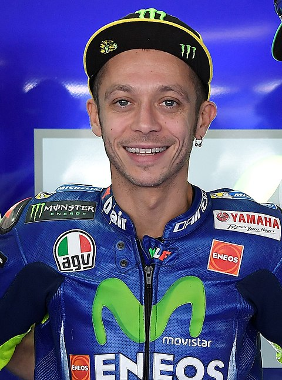

Valentino Rossi
ill dottoreEs un expiloto de motociclismo italiano. Ha ganado nueve títulos mundiales en cuatro categorías: 125cc (1997), 250cc (1999), 500cc (2001) y ha sido heptacampeón de la categoría MotoGP (2001 2002, 2003, 2004, 2005, 2008 y 2009). Ha participado en la máxima categoría, con los tres grandes equipos de motociclismo de su momento: Honda, Yamaha y Ducati, siendo desde 2013 y hasta 2020 piloto oficial Yamaha. En 2021 vistió los colores del Petronas Yamaha SRT.
ill dottore
Actualmente, es el piloto con más podios (235) en la historia del Mundial de Motociclismo, y además ha conseguido el mayor número de victorias (89), podios (199) y vueltas rápidas (76) en MotoGP. Es el único piloto en la historia del motociclismo que ha ganado el título en cuatro clases diferentes: 125cc (1), 250cc (1), 500cc (1) y MotoGP (6), además de ser el único piloto que ha ganado el título de la categoría reina en cuatro tipos diferentes de motocicletas, debido al cambio de reglamento en los años: Honda de 500 cc de 2 tiempos, Honda de 990 cc de 4 tiempos, Yamaha de 990 cc de 4 tiempos, Yamaha de 800 cc de 4 tiempos.